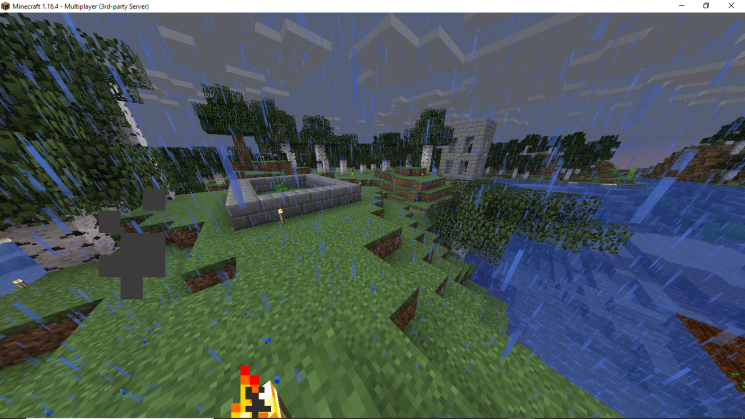
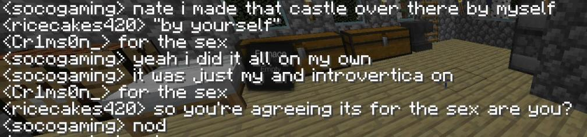
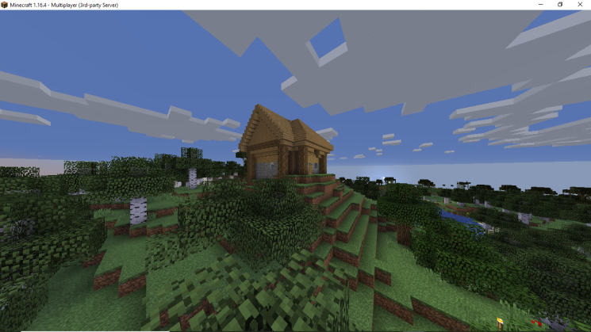
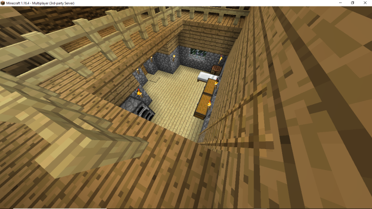
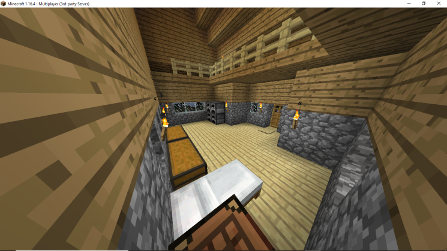
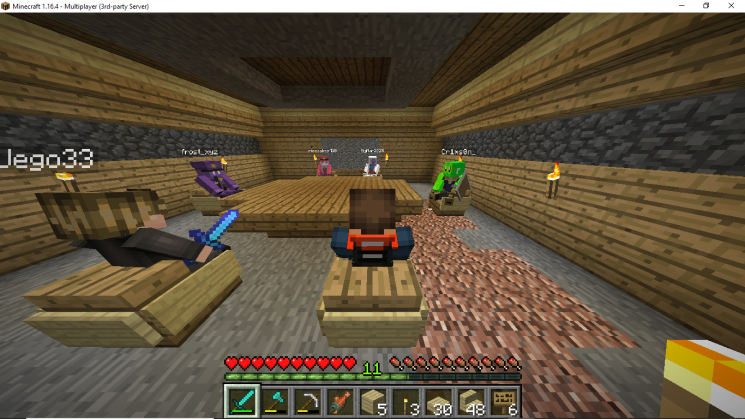
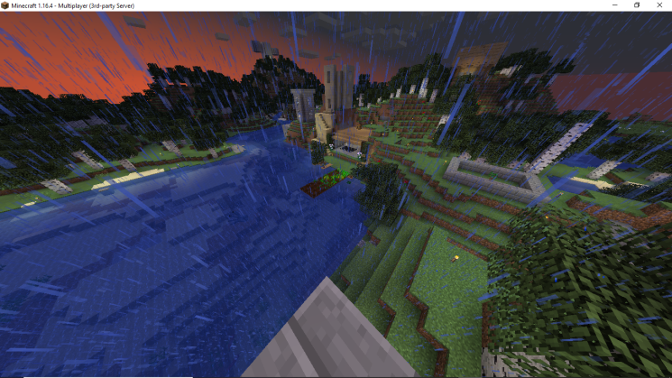
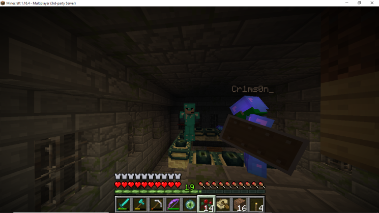
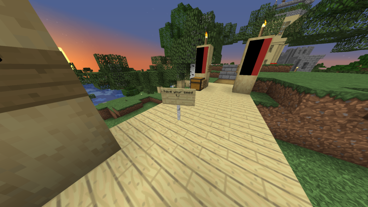
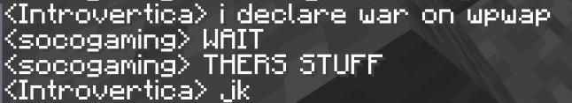

Wpwap Minecraft Resources
The 26th marked the second day that Wpwap had entered the server. Things were going well, and structures were continuing to be erected, most notably the meeting room which resided under Jacob's house, and operated as a base of command. However, tensions were running high.
Soco's castle, while under construction.
Chat logs between TJ (Cr1mson), Nate (ricecakes420), and Soco (socogaming) discussing the castle.
Jacob's completed house, from the exterior.
A view of Jacob's house, overlooking the first floor on the balcony.
A view of Jacob's house from the interior, showing the balcony and entire first floor.
The underground meeting room, as a meeting is taking place.
An updated view of Soco's side of the DMZ, with Chateu De Pog and Jacob's house prominently featured in the background.
Jackie and TJ preparing to enter The End.
A sign placed on the Wpwap - Soco DMZ bridge.
A close call, as tensions are raised further.
